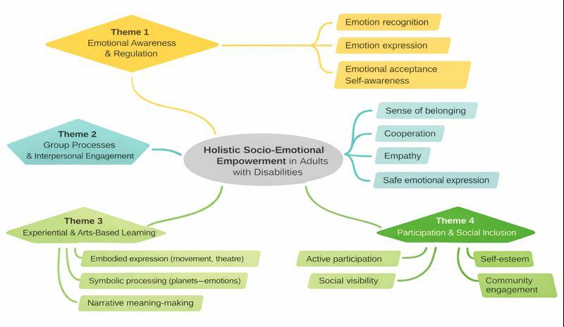
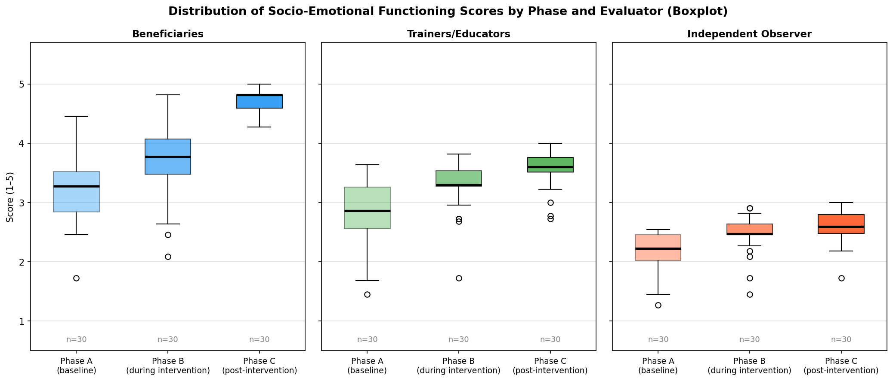
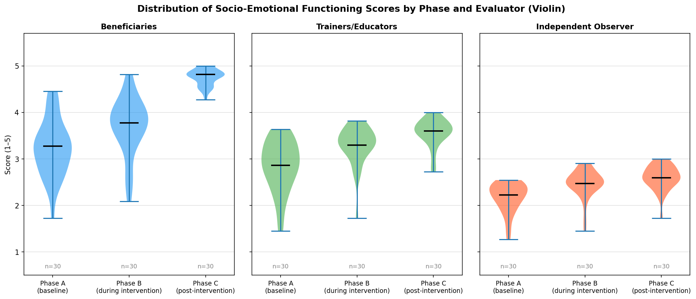
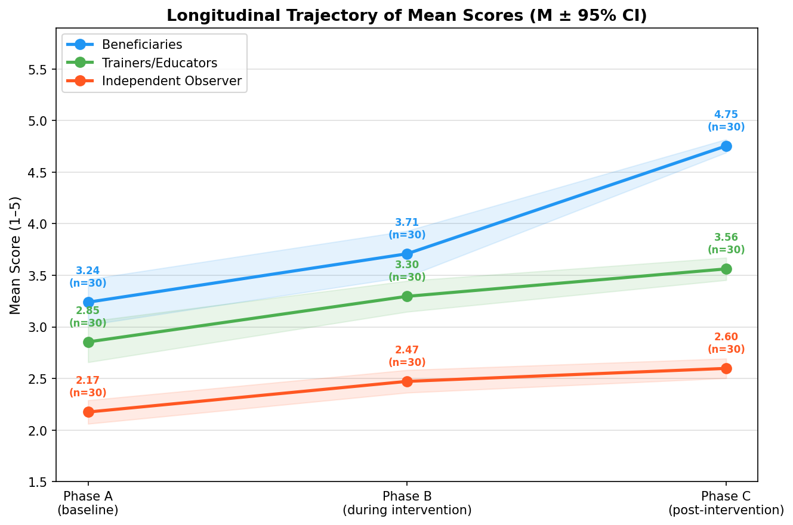
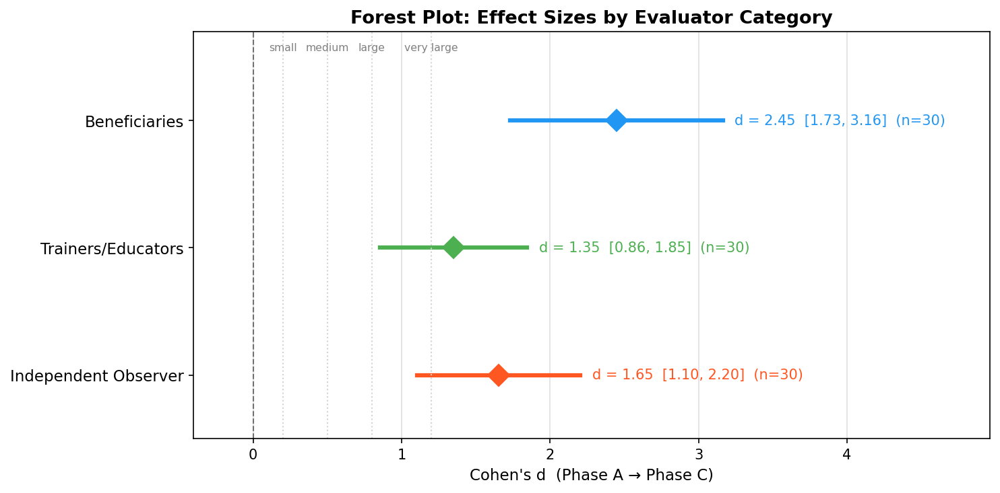

Το Σύμπαν Μέσα Μας

Μια παράσταση από τον Κήπο της Λυσούς, τους ωφελούμενούς μας και μαθητές από το Δημοτικό Σχολείο Λείκων, το 9ο Νηπιαγωγείο Καλαμάτας και το 12ο Δημοτικό Σχολείο Καλαμάτας.
Εδώ και μήνες ταξιδεύουμε μαζί στον κόσμο των συναισθημάτων, τα συζητάμε, τα εκφράζουμε, τα αποδεχόμαστε. Μέσα από βιωματικά εργαστήρια, πρόβες και συγκινητικές στιγμές, γεννήθηκε μια παράσταση που δεν είναι απλώς θέαμα, αλλά εμπειρία.
Το Σύμπαν Μέσα Μας είναι μια πρόσκληση να κοιτάξουμε βαθιά, να αναγνωρίσουμε το φως και το σκοτάδι μέσα μας, να συναντηθούμε.
Οι ωφελούμενοι του Κήπου έδωσαν τον καλύτερό τους εαυτό, με αφοσίωση, φαντασία και ψυχή.
Θέματα της παράστασης
- Τα συναισθήματα και η έκφρασή τους
- Η διαφορετικότητα ως δύναμη
- Η συμπερίληψη και η αποδοχή
- Η χαρά της συνύπαρξης
Σας περιμένουμε να συμπορευτείτε μαζί μας σε αυτό το ταξίδι, να συγκινηθούμε, να γιορτάσουμε τη διαφορετικότητα, την αποδοχή και τη χαρά της συνύπαρξης.
Ευχαριστούμε θερμά όλα τα σχολεία και τους εκπαιδευτικούς που μας εμπιστεύτηκαν και έκαναν αυτή την παράσταση πραγματικότητα.
Βίντεο-ντοκιμαντέρ
Βίντεο-ντοκιμαντέρ που δημιουργήθηκε με αφορμή την προετοιμασία του μουσικοθεατρικού δρώμενου «Το Σύμπαν μέσα μας», με την υποστήριξη του Υπουργείου Πολιτισμού.
Η Έρευνα πίσω από τη Δράση
Το πρόγραμμα Το Σύμπαν Μέσα Μας δεν ήταν μόνο μια εμπειρία — ήταν και αντικείμενο επιστημονικής έρευνας. Αξιολογήσαμε συστηματικά την αποτελεσματικότητά του σε 30 ωφελούμενους, μέσα από τρεις φάσεις μέτρησης και τρεις ανεξάρτητες πηγές αξιολόγησης.

Τι περιελάμβανε η παρέμβαση
- Θεατρικές ασκήσεις και παιχνίδι ρόλων
- Κίνηση και σωματική έκφραση
- Μουσική και σύνθεση πρωτότυπου τραγουδιού
- Κεραμική και εικαστική δημιουργία
- Κατασκευή πλανητών-συναισθημάτων
- Ομαδικός διάλογος και ασκήσεις ενσυναίσθησης
Βασικά Αποτελέσματα
Οι μέσοι όροι αυτοαναφορών αυξήθηκαν από 3,24 (Φάση Α) σε 4,75 (Φάση Γ). Οι αξιολογήσεις εκπαιδευτών (2,85 → 3,56) και ανεξάρτητου παρατηρητή (2,17 → 2,60) επιβεβαίωσαν αντίστοιχη βελτίωση. Η σύγκλιση αποτελεσμάτων από τρεις ανεξάρτητες πηγές ενισχύει σημαντικά την αξιοπιστία των ευρημάτων.




Τα ευρήματα υποδηλώνουν ότι ένα δομημένο βιωματικό πρόγραμμα στο πλαίσιο ενός ΚΔΗΦ μπορεί να αποτελέσει σημαντικό εργαλείο ενδυνάμωσης της κοινωνικο-συναισθηματικής λειτουργίας ατόμων με αναπηρία, ενισχύοντας τη συμπερίληψη, τη συμμετοχή και την ψυχοκοινωνική ευζωία.